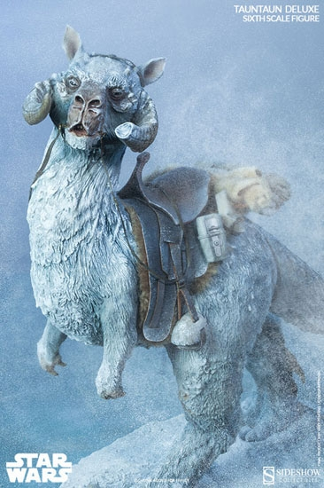
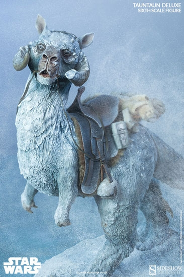
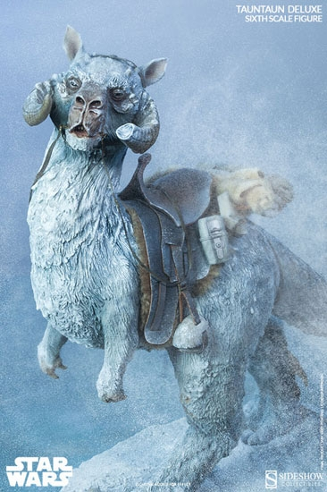

About Me!
Hi, my name is Metabel Assefa and I'm currently 16 years old. I was born and raised in New York but my ethnicity is Ethiopian and a mix of places in the Middle East like Saudi Arabia and Egypt. I attent West Hempstead High School and I am moving up into my Junior year. My hobbies are acrylic painting, playing music, and singing. I also love to run, swim, and play soccer. I would like to attend NYU after high school to pursue my Medical and Engineering career goals. I would like to double major in Neurology and Aerospace Engineering. I would like to minor in music and computer science as well. I would love to travel during my years in college as well and leave my New York City comfort zone if that oppurtunity is given to me. My heart is honestly where ever my Barrett is though. I don't know how to describe my personality so i'll just show a few pictures of what I like.
